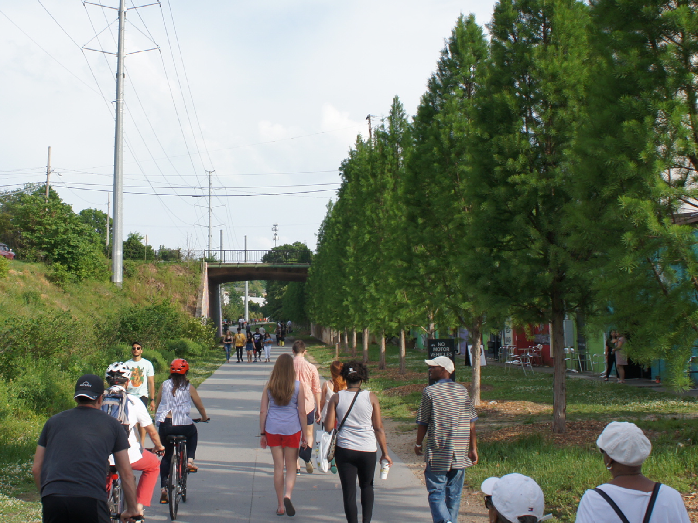
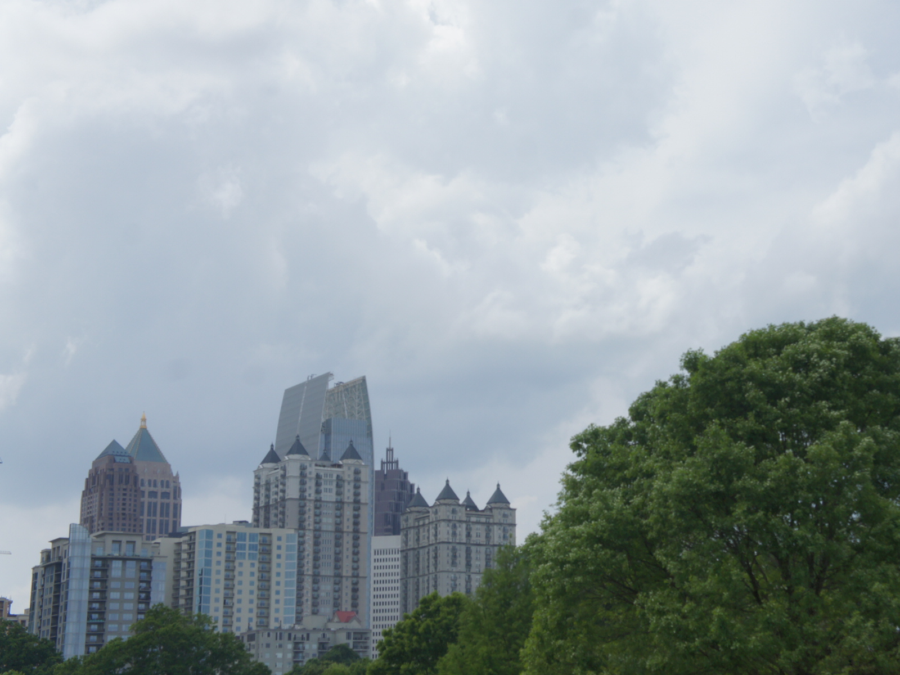
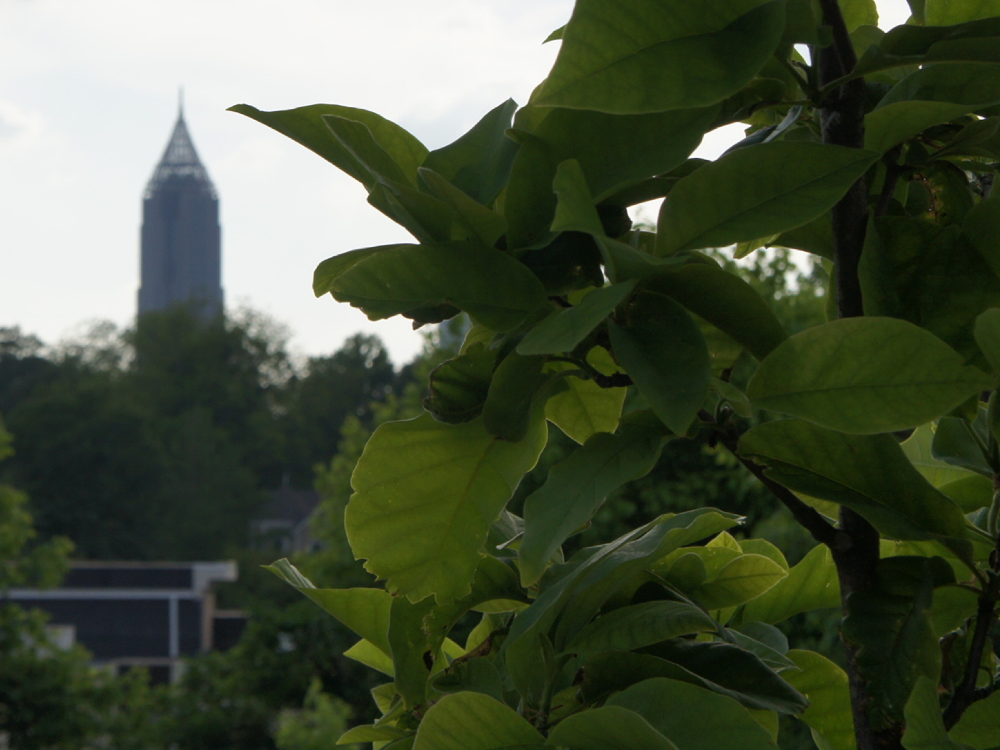

Together, let's make Atlanta green!
Watch our Campaign Video to learn about greenATL!
About Us
greenATL is a non-profit organization that advocates for the greenification of Atlanta through public service projects such as Atlanta Park clean-ups, tree planting projects, and advocacy work throughout Atlanta. We work to engage young Atlantans in the betterment of their city and help to connect passionate citizens with other Atlanta-Area non-profits also working to greenify the city...
Read More
Our Projects
|

THE BELTLINE |

MIDTOWN |

BUCKHEAD |

YOUR NEIGHBORHOOD |
Get Involved
Atlanta's greenification starts with you!
We need passionate citizens who are willing to give a little of their time to help clean up and greenify Atlanta -- It only takes one weekend afternoon or one stroll in the park to make a difference!
Here are some ways you can have an impact:
• Volunteer your time with a Park Conservancy or a Park Restoration Organization. The Piedmont Park Conservancy and Trees Atlanta offer volunteer opportunities for all ages so anyone can get out and make Atlanta green!
• Support your local park by donating to the Park. You can donate to Chastain Park, Atlanta Memorial Park, or Piedmont Park through their respective Park Conversancy Organizations
• Attend Community Planning Meetings to advocate for increased greenspace and parkspace in your Neighborhood. Organizations such as Buckhead Redefined and The Midtown Alliance are great for getting involved in your community and advocating for its greenification
• Plant trees in your neighborhood or in your backyard to get started making Atlanta green on your own or with your local community
• Pick up trash while in a Park or on the Beltline - Atlanta's greenification starts with clean parks
• Share this website and our campaign video with your friends on social media to spread awareness about Atlanta greenspaces and Atlanta' greenification!
Follow Us
For general inquiries and/or to find out more about how you can make Atlanta green, email us at atl@greenatl.org
Acknowledgements
Copyright © 2017. greenATL, Inc. All rights reserved. Social Media icon designs are the intellectual property of Instagram, LLC, Twitter, Inc., and Snapchat, Inc., respectively.
Special thanks to Ms. Nicole O'Brien, Ms. Joyce Pereira and The AIS Design Department.